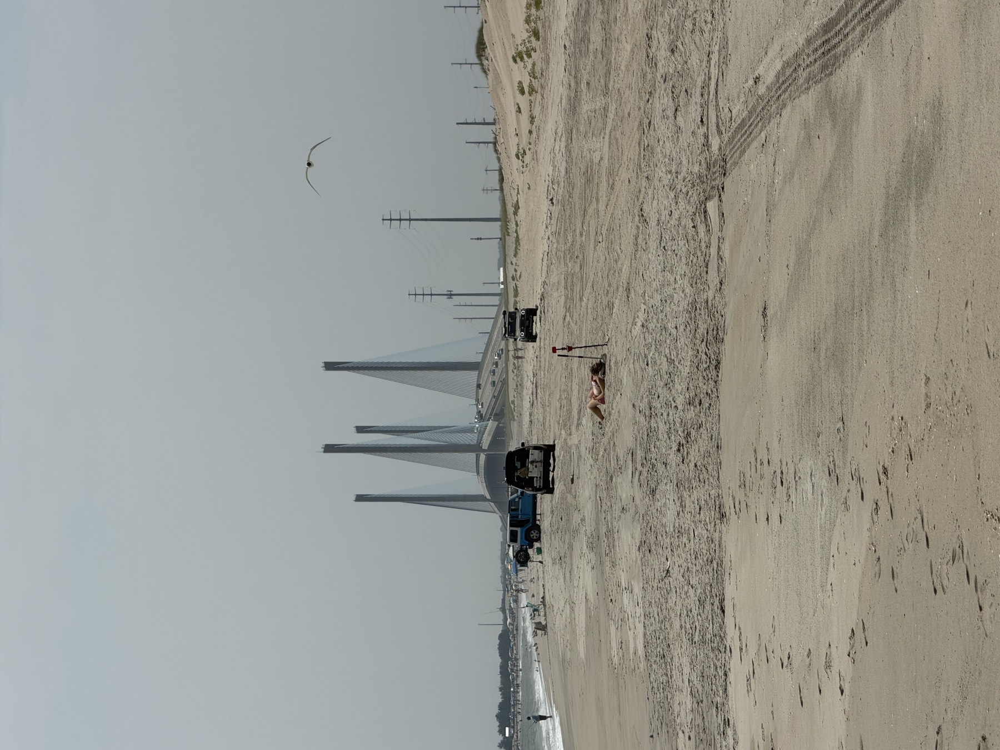

The summer calendar at the Delaware beaches ends on a Monday, in public, on purpose.
This evening in Bethany, a New Orleans-style procession will walk to the bandstand for the forty-first time and hold a funeral for the season. Half an hour later and eleven miles north, the Rehoboth Beach Historical Society will gather anyone with an instrument at the Henlopen Hotel — kazoos provided for the unequipped — and pipe the summer out along the Boardwalk to the bandstand.
Two towns, two processions, one idea: somebody should say out loud when it is over.
What almost nobody says out loud is what starts the next morning.
The part that does not close
The useful thing about Labor Day at this coast is how little it actually shuts down. The lifeguard stands come in and the crowds thin, and both of those are real. But the assumption that follows — that the season is finished and the towns go dark until May — is a visitor's assumption, and it is wrong in specific, checkable ways.
Start with the market. The Rehoboth Beach Farmers Market runs Tuesdays at Grove Park into the middle of October. Nassau Valley Vineyards keeps its Sunday market going on the same timetable. These are not wind-down gestures; they are the ordinary schedule, and they outlast the summer by six weeks.
Then look at this particular week. On Thursday the first Delaware Beaches Songwriters Festival opens at the Dogfish Inn in Lewes and runs through Sunday across Milton and Cedar Grove — writers rounds and fireside chats rather than headliners. On Saturday more than a hundred juried artists set up along the Bethany boardwalk for the forty-eighth Boardwalk Arts Festival, which has been deliberately scheduled for the Saturday after Labor Day for most of half a century.
None of that is a consolation prize for missing August. It is the schedule. The organisations that run this coast put their largest events in September because September is when there is room for them.
What actually changes
The honest answer is: the ratio.
In July the beach is a destination and everything else is what you do around it. In September the beach is the backdrop and the rest of it — the market, the festival, the town itself — moves to the front. The boardwalk is still there. It is simply possible to walk down it.
The water is the part visitors get most wrong. The Atlantic here is at or near its warmest in early September, because the ocean lags the air by weeks. The crowd leaves on a calendar; the water leaves on physics. For a stretch after Labor Day the swimming is better than it was in June, with a fraction of the people, and the only thing you give up is the guarded beach.
That last part is not a small thing, and it is worth being plain about it: once the stands come in, you are swimming unguarded. The trade for an empty beach is that nobody is watching.
The surf-fishing changeover
The clearest signal that the coast has changed gear is the number of trucks on the sand.
Delaware's drive-on surf-fishing beaches are busy year-round, but the population shifts in September as the summer beach crowd thins and the fishing improves. The same stretch of sand that held umbrellas in August holds rod holders in October. It is the same beach doing a different job.

The thing to actually check
If you are coming down this month, the single most useful thing to know is that Labor Day did not end paid parking, and that the towns do not agree with each other about when it does.
Rehoboth, Dewey, Bethany and Fenwick all run their paid seasons to September 15. Lewes runs its meters to October 14. We have written the whole thing up, town by town, with the official dates: Parking isn’t free everywhere yet.
Second season
There is a version of this story that is a tourism brochure, and it says September is a hidden gem and you should visit. That is not quite the point.
The point is that the Delaware coast has two seasons and only one of them is famous. The famous one is loud, crowded, expensive and short. The other one starts tomorrow morning, runs to about Thanksgiving, and is the season the people who live here would pick if they were only allowed one.
Bethany will bury the summer at half past five. Rehoboth will pipe it out at six. Then everybody goes home, and the good part starts.
Sources: Bethany Beach Cultural & Historical Affairs Committee and Coastal Point for the Founders Day Weekend programme and the 41st Jazz Funeral; Rehoboth Beach Historical Society & Museum for the Piping Out parade; Visit Southern Delaware for the Rehoboth Beach and Nassau Valley market schedules; the Delaware Beaches Songwriters Festival and 10:10 Creative for festival dates and venues; the Bethany-Fenwick Area Chamber of Commerce for the 48th Boardwalk Arts Festival. Parking dates are drawn from each municipality's own published regulations and are set out with citations in the accompanying parking guide. Sea-surface temperature lagging air temperature into early autumn is a general oceanographic pattern rather than a figure measured by this publication; no specific water temperature is claimed here. Verified 7 September 2026.